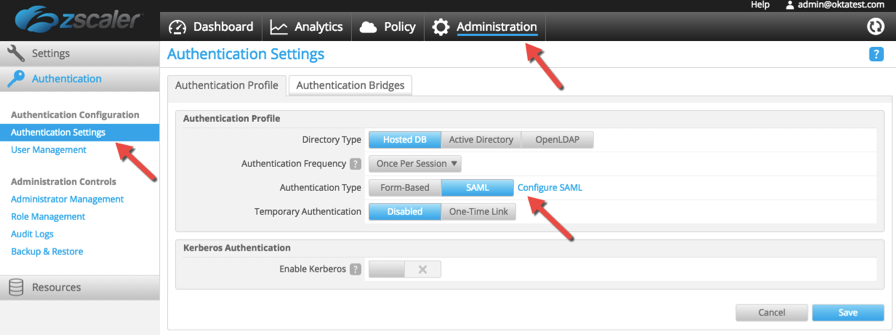
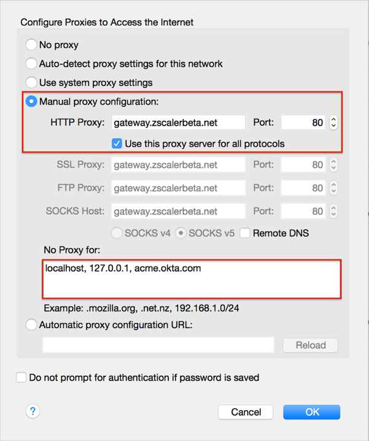
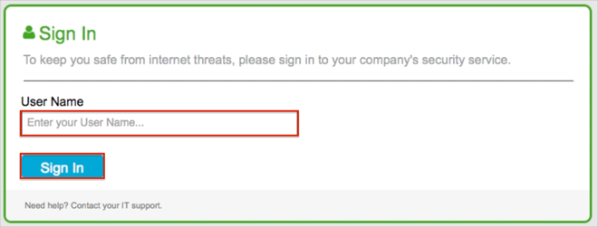

Log into the ZScaler application.
Select the Administration tab along the top.
Select Authentication Settings from the left navigation panel.
For Authentication Type, click the SAML button.
Click Configure SAML.

In the Identity Provider (IDP) Options section of the SAML Congifuration screen, enter the following (see screen shot at end of step for reference):
SAML Portal URL: Copy and paste the following:
Sign in to the Okta Admin app to have this variable generated for you.
Login Name Attribute: Enter NameID.
Public SSL Certificate: First click here to download the certificate for upload:
Sign in to the Okta Admin app to have this variable generated for you.
Then click Upload to upload it to ZScaler.
Click Save.

Done!
On the General tab configure for ZScaler:
Select Display name mapping to Use. The user's display name, a concatenation of their first name and last name, is mapped to the attribute statement in the SAML Response.
Select Department mapping to AD Department.
The user's AD department is mapped to the attribute statement in the SAML Response
Select Group mapping to Use. User's groups is mapped to the attribute statement in the SAML Response.
Member of regular expression is used in conjunction with Group mapping.
The expression is used to filter groups. Groups that match the configured filter are mapped to the attribute statement in the SAML Response.
On the ZScaler Administration page, complete the following steps.
Click Manage Users & Authentication.
Click Edit, then click Configure SAML Single Sign-On parameters.
Click Enable SAML Auto-Provisioning.
For Attribute containing User Display Name enter the following:
DisplayName
For Attribute containing Group Name enter the following:
memberOf
For Attribute containing Department Name enter the following:
Department
Press Done.
Press Save.
Set your browser proxy to gateway.[ yourZScalerDomain]:80.
For example if your ZScaler Domain is zscalerbeta.net; use gateway.zscalerbeta.net:80 proxy.
Add your Okta URL host ([yourSubdomain].okta.com) to the proxy bypass list.
For example if you log into https://acme.okta.com/; enter acme.okta.com.
Here is an example, shown in a Firefox browser:

Your users are ready to single sign-on to ZScaler.
SP-initiated flows and Just In Time (JIT) provisioning are supported.
IDP-initiated flows are not supported.
Enter your User Name, then click the Sign In button:
